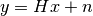
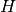
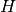
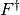
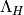
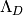
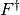
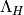
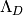

Image restoration module.
| [R266] | François Orieux, Jean-François Giovannelli, and Thomas Rodet, “Bayesian estimation of regularization and point spread function parameters for Wiener-Hunt deconvolution”, J. Opt. Soc. Am. A 27, 1593-1607 (2010) http://www.opticsinfobase.org/josaa/abstract.cfm?URI=josaa-27-7-1593 |
| [R267] | Richardson, William Hadley, “Bayesian-Based Iterative Method of Image Restoration”. JOSA 62 (1): 55–59. doi:10.1364/JOSA.62.000055, 1972 |
| [R268] | B. R. Hunt “A matrix theory proof of the discrete convolution theorem”, IEEE Trans. on Audio and Electroacoustics, vol. au-19, no. 4, pp. 285-288, dec. 1971 |
| skimage.restoration.denoise_bilateral(image) | Denoise image using bilateral filter. |
| skimage.restoration.denoise_tv_bregman(...) | Perform total-variation denoising using split-Bregman optimization. |
| skimage.restoration.denoise_tv_chambolle(im) | Perform total-variation denoising on 2D and 3D images. |
| skimage.restoration.richardson_lucy(image, psf) | Richardson-Lucy deconvolution. |
| skimage.restoration.unsupervised_wiener(...) | Unsupervised Wiener-Hunt deconvolution |
| skimage.restoration.unwrap_phase(image[, ...]) | From image, wrapped to lie in the interval [-pi, pi), recover the original, unwrapped image. |
| skimage.restoration.wiener(image, psf, balance) | Wiener-Hunt deconvolution |
Denoise image using bilateral filter.
This is an edge-preserving and noise reducing denoising filter. It averages pixels based on their spatial closeness and radiometric similarity.
Spatial closeness is measured by the gaussian function of the euclidian distance between two pixels and a certain standard deviation (sigma_spatial).
Radiometric similarity is measured by the gaussian function of the euclidian distance between two color values and a certain standard deviation (sigma_range).
| Parameters: | image : ndarray
win_size : int
sigma_range : float
sigma_spatial : float
bins : int
mode : string
cval : string
|
|---|---|
| Returns: | denoised : ndarray
|
References
| [R281] | http://users.soe.ucsc.edu/~manduchi/Papers/ICCV98.pdf |
Perform total-variation denoising using split-Bregman optimization.
Total-variation denoising (also know as total-variation regularization) tries to find an image with less total-variation under the constraint of being similar to the input image, which is controlled by the regularization parameter.
| Parameters: | image : ndarray
weight : float, optional
eps : float, optional
max_iter : int, optional
isotropic : boolean, optional
|
|---|---|
| Returns: | u : ndarray
|
References
| [R282] | http://en.wikipedia.org/wiki/Total_variation_denoising |
| [R283] | Tom Goldstein and Stanley Osher, “The Split Bregman Method For L1 Regularized Problems”, ftp://ftp.math.ucla.edu/pub/camreport/cam08-29.pdf |
| [R284] | Pascal Getreuer, “Rudin–Osher–Fatemi Total Variation Denoising using Split Bregman” in Image Processing On Line on 2012–05–19, http://www.ipol.im/pub/art/2012/g-tvd/article_lr.pdf |
| [R285] | http://www.math.ucsb.edu/~cgarcia/UGProjects/BregmanAlgorithms_JacquelineBush.pdf |
Perform total-variation denoising on 2D and 3D images.
| Parameters: | im : ndarray (2d or 3d) of ints, uints or floats
weight : float, optional
eps : float, optional
n_iter_max : int, optional
multichannel : bool, optional
|
|---|---|
| Returns: | out : ndarray
|
Notes
Make sure to set the multichannel parameter appropriately for color images.
The principle of total variation denoising is explained in http://en.wikipedia.org/wiki/Total_variation_denoising
The principle of total variation denoising is to minimize the total variation of the image, which can be roughly described as the integral of the norm of the image gradient. Total variation denoising tends to produce “cartoon-like” images, that is, piecewise-constant images.
This code is an implementation of the algorithm of Rudin, Fatemi and Osher that was proposed by Chambolle in [R286].
References
| [R286] | (1, 2) A. Chambolle, An algorithm for total variation minimization and applications, Journal of Mathematical Imaging and Vision, Springer, 2004, 20, 89-97. |
Examples
2D example on Lena image:
>>> from skimage import color, data
>>> lena = color.rgb2gray(data.lena())[:50, :50]
>>> lena += 0.5 * lena.std() * np.random.randn(*lena.shape)
>>> denoised_lena = denoise_tv_chambolle(lena, weight=60)
3D example on synthetic data:
>>> x, y, z = np.ogrid[0:20, 0:20, 0:20]
>>> mask = (x - 22)**2 + (y - 20)**2 + (z - 17)**2 < 8**2
>>> mask = mask.astype(np.float)
>>> mask += 0.2*np.random.randn(*mask.shape)
>>> res = denoise_tv_chambolle(mask, weight=100)
Richardson-Lucy deconvolution.
| Parameters: | image : ndarray
psf : ndarray
iterations : int
clip : boolean, optional
|
|---|---|
| Returns: | im_deconv : ndarray
|
References
| [R288] | http://en.wikipedia.org/wiki/Richardson%E2%80%93Lucy_deconvolution |
Examples
>>> from skimage import color, data, restoration
>>> camera = color.rgb2gray(data.camera())
>>> from scipy.signal import convolve2d
>>> psf = np.ones((5, 5)) / 25
>>> camera = convolve2d(camera, psf, 'same')
>>> camera += 0.1 * camera.std() * np.random.standard_normal(camera.shape)
>>> deconvolved = restoration.richardson_lucy(camera, psf, 5)
Unsupervised Wiener-Hunt deconvolution
Return the deconvolution with a Wiener-Hunt approach, where the hyperparameters are automatically estimated. The algorithm is a stochastic iterative process (Gibbs sampler) described in the reference below. See also wiener function.
| Parameters: | image : (M, N) ndarray
psf : ndarray
reg : ndarray, optional
user_params : dict
clip : boolean, optional
|
|---|---|
| Returns: | x_postmean : (M, N) ndarray
chains : dict
|
| Other Parameters: | |
The keys of ``user_params`` are: : threshold : float
burnin : int
min_iter : int
max_iter : int
callback : callable (None by default)
|
|
Notes
The estimated image is design as the posterior mean of a probability law (from a Bayesian analysis). The mean is defined as a sum over all the possible images weighted by their respective probability. Given the size of the problem, the exact sum is not tractable. This algorithm use of MCMC to draw image under the posterior law. The practical idea is to only draw high probable image since they have the biggest contribution to the mean. At the opposite, the lowest probable image are draw less often since their contribution are low. Finally the empirical mean of these samples give us an estimation of the mean, and an exact computation with an infinite sample set.
References
| [R288] | François Orieux, Jean-François Giovannelli, and Thomas Rodet, “Bayesian estimation of regularization and point spread function parameters for Wiener-Hunt deconvolution”, J. Opt. Soc. Am. A 27, 1593-1607 (2010) http://www.opticsinfobase.org/josaa/abstract.cfm?URI=josaa-27-7-1593 |
Examples
>>> from skimage import color, data, restoration
>>> lena = color.rgb2gray(data.lena())
>>> from scipy.signal import convolve2d
>>> psf = np.ones((5, 5)) / 25
>>> lena = convolve2d(lena, psf, 'same')
>>> lena += 0.1 * lena.std() * np.random.standard_normal(lena.shape)
>>> deconvolved_lena = restoration.unsupervised_wiener(lena, psf)
From image, wrapped to lie in the interval [-pi, pi), recover the original, unwrapped image.
| Parameters: | image : 1D, 2D or 3D ndarray of floats, optionally a masked array
wrap_around : bool or sequence of bool
|
|---|---|
| Returns: | image_unwrapped : array_like, float32
|
| Raises: | ValueError :
|
References
| [R289] | Miguel Arevallilo Herraez, David R. Burton, Michael J. Lalor, and Munther A. Gdeisat, “Fast two-dimensional phase-unwrapping algorithm based on sorting by reliability following a noncontinuous path”, Journal Applied Optics, Vol. 41, No. 35 (2002) 7437, |
| [R290] | Abdul-Rahman, H., Gdeisat, M., Burton, D., & Lalor, M., “Fast three-dimensional phase-unwrapping algorithm based on sorting by reliability following a non-continuous path. In W. Osten, C. Gorecki, & E. L. Novak (Eds.), Optical Metrology (2005) 32–40, International Society for Optics and Photonics. |
Examples
>>> c0, c1 = np.ogrid[-1:1:128j, -1:1:128j]
>>> image = 12 * np.pi * np.exp(-(c0**2 + c1**2))
>>> image_wrapped = np.angle(np.exp(1j * image))
>>> image_unwrapped = unwrap_phase(image_wrapped)
>>> np.std(image_unwrapped - image) < 1e-6 # A constant offset is normal
True
Wiener-Hunt deconvolution
Return the deconvolution with a Wiener-Hunt approach (i.e. with Fourier diagonalisation).
| Parameters: | image : (M, N) ndarray
psf : ndarray
balance : float
reg : ndarray, optional
is_real : boolean, optional
clip : boolean, optional
|
|---|---|
| Returns: | im_deconv : (M, N) ndarray
|
Notes
This function applies the Wiener filter to a noisy and degraded image by an impulse response (or PSF). If the data model is

where  is noise,  the PSF and
is noise,  the PSF and  the
unknown original image, the Wiener filter is
the
unknown original image, the Wiener filter is

where  and  are the Fourier and inverse
Fourier transfroms respectively,  the transfer
function (or the Fourier transfrom of the PSF, see [Hunt] below)
and  the filter to penalize the restored image
frequencies (Laplacian by default, that is penalization of high
frequency). The parameter
and  are the Fourier and inverse
Fourier transfroms respectively,  the transfer
function (or the Fourier transfrom of the PSF, see [Hunt] below)
and  the filter to penalize the restored image
frequencies (Laplacian by default, that is penalization of high
frequency). The parameter  tunes the balance
between the data (that tends to increase high frequency, even
those coming from noise), and the regularization.
tunes the balance
between the data (that tends to increase high frequency, even
those coming from noise), and the regularization.
These methods are then specific to a prior model. Consequently, the application or the true image nature must corresponds to the prior model. By default, the prior model (Laplacian) introduce image smoothness or pixel correlation. It can also be interpreted as high-frequency penalization to compensate the instability of the solution wrt. data (sometimes called noise amplification or “explosive” solution).
Finally, the use of Fourier space implies a circulant property of , see [Hunt].
References
| [R291] | François Orieux, Jean-François Giovannelli, and Thomas Rodet, “Bayesian estimation of regularization and point spread function parameters for Wiener-Hunt deconvolution”, J. Opt. Soc. Am. A 27, 1593-1607 (2010) http://www.opticsinfobase.org/josaa/abstract.cfm?URI=josaa-27-7-1593 |
| [R292] | B. R. Hunt “A matrix theory proof of the discrete convolution theorem”, IEEE Trans. on Audio and Electroacoustics, vol. au-19, no. 4, pp. 285-288, dec. 1971 |
Examples
>>> from skimage import color, data, restoration
>>> lena = color.rgb2gray(data.lena())
>>> from scipy.signal import convolve2d
>>> psf = np.ones((5, 5)) / 25
>>> lena = convolve2d(lena, psf, 'same')
>>> lena += 0.1 * lena.std() * np.random.standard_normal(lena.shape)
>>> deconvolved_lena = restoration.wiener(lena, psf, 1100)